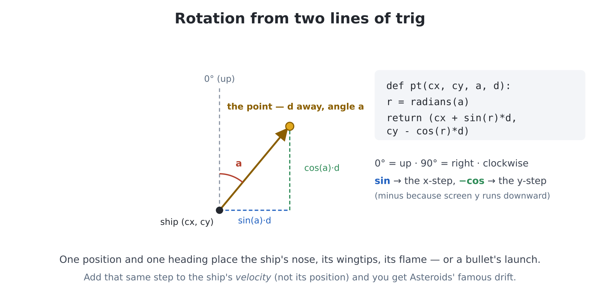
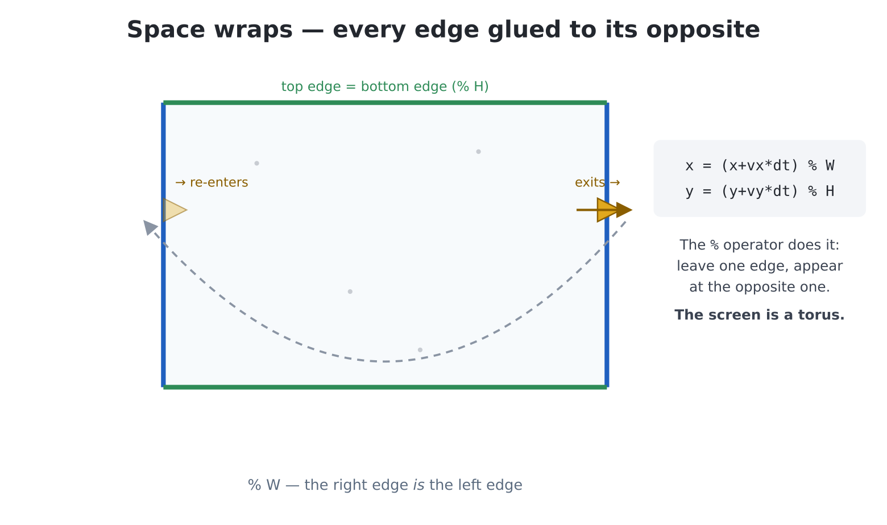

Pong gave you the loop; Breakout gave you a destructible world. The 1979 masterpiece this chapter rebuilds adds the three tools that carry every action game since: rotation (a ship that points where it likes, from two lines of trigonometry), entity crowds (rocks, bullets and sparks as lists that grow and shrink mid-flight), and momentum — because what made Asteroids immortal was not the shooting but the drift. We honour the original’s look, too: vector graphics, drawn fresh each frame, no sprite sheet required — the machine can afford what Atari’s engineers bled for.
Two stages again: tonight the ship alone — flight is half the game — then the rocks, the guns and the crowd.
Everything new in stage one is this helper:
def pt(cx, cy, ang, dist):
r = math.radians(ang)
return cx + math.sin(r) * dist, cy - math.cos(r) * distThe point dist pixels from (cx, cy), in
direction ang. Angles work exactly like the turtle’s
heading (chapter 9): 0° is up, 90° is right, clockwise. sin
supplies the x-share of the step and cos the y-share
(minus, because screen y runs down) — that is the entire mathematics of
rotation in 2-D, and with it you can place a ship’s nose, its wingtips,
its exhaust flame, or a bullet’s launch point, all from one position and
one heading. (math covers 2-D games completely; the
firmware’s pcmath adds quaternions and 3-D vectors for the
day you leave flatland.)

edit("flight.py"):
import pcgame
import keyboard
import math
import random
import time
def held(code):
for i in range(1, keydown(0) + 1):
if keydown(i) == code:
return True
return False
def pt(cx, cy, ang, dist):
r = math.radians(ang)
return cx + math.sin(r) * dist, cy - math.cos(r) * dist
screen(hdmi.RGB320)
time.sleep(3)
W = hdmi.width()
H = hdmi.height()
hdmi.close("F")
hdmi.create()
hdmi.write("F")
d = hdmi.fb()
BG = d.colour(0x000008)
INK = d.colour(WHITE)
FLAME = d.colour(ORANGE)
STAR = d.colour(GRAY)
random.seed(4)
stars = [(random.randint(0, W - 1), random.randint(0, H - 1))
for _ in range(60)]
x, y = W / 2, H / 2
vx = vy = 0.0
# heading, degrees, 0 = up
a = 0.0
clock = pcgame.Clock(vsync=True)
console("none")
try:
while not held(keyboard.ESC):
dt = clock.tick()
if held(keyboard.LEFT):
a -= 220 * dt
if held(keyboard.RIGHT):
a += 220 * dt
thrusting = held(keyboard.UP)
if thrusting:
r = math.radians(a)
# thrust adds to VELOCITY
vx += math.sin(r) * 240 * dt
vy -= math.cos(r) * 240 * dt
# a whisper of drag
vx *= 1 - 0.3 * dt
vy *= 1 - 0.3 * dt
x = (x + vx * dt) % W # space wraps
y = (y + vy * dt) % H
d.fill(BG)
for sx, sy in stars:
d.pixel(sx, sy, STAR)
nx, ny = pt(x, y, a, 11) # nose
lx, ly = pt(x, y, a + 140, 9) # wingtips
rx, ry = pt(x, y, a - 140, 9)
d.line(int(nx), int(ny), int(lx), int(ly), INK, 1)
d.line(int(nx), int(ny), int(rx), int(ry), INK, 1)
d.line(int(lx), int(ly), int(rx), int(ry), INK, 1)
if thrusting:
fx, fy = pt(x, y, a + 180, 8)
d.line(int(x), int(y), int(fx), int(fy), FLAME, 1)
hdmi.copy("F", "N")
finally:
hdmi.write("N")
console()
screen(hdmi.RGB640)Fly it until the physics is in your hands — it takes a minute, and then it takes hold. What you are feeling:
vx += ... — the engine pushes, momentum keeps. Releasing
thrust doesn’t stop you; pointing backwards and burning does. This one
design choice is Asteroids. (The 1 - 0.3 * dt drag
is a small modern mercy — set it to 1.0 exactly for the
pitiless 1979 handling and see which your thumbs prefer.)% W — off the right edge
is onto the left. One operator, chapter 3’s remainder, and the little
screen becomes a boundless torus. Every moving thing in stage two
inherits it.
pt() from one (x, y, a) — rotation without a
single rotated bitmap. The flame is a fourth line, drawn only while
burning: instant feedback, zero cost.RGB320 — the crowd is coming, and the smaller
framebuffer keeps whole-frame fills and flips cheap (it’s why the
firmware’s own demos live here too). Note the finally
returns the survivor to RGB640.Rocks that split, bullets that expire, sparks that scatter — three
crowds, each a plain list of
[x, y, vx, vy, ...] entries, walked, moved and culled every
frame. This is the “sprite groups” idea in its rawest, most honest form:
nothing but chapter 10. edit("asteroids.py"):
import pcgame
import keyboard
import math
import random
import time
def held(code):
for i in range(1, keydown(0) + 1):
if keydown(i) == code:
return True
return False
def pt(cx, cy, ang, dist):
r = math.radians(ang)
return cx + math.sin(r) * dist, cy - math.cos(r) * dist
screen(hdmi.RGB320)
time.sleep(3)
W = hdmi.width()
H = hdmi.height()
hdmi.close("F")
hdmi.create()
hdmi.write("F")
d = hdmi.fb()
BG = d.colour(0x000008)
INK = d.colour(WHITE)
FLAME = d.colour(ORANGE)
STAR = d.colour(GRAY)
ROCKC = d.colour(LITEGRAY)
RADIUS = {3: 15, 2: 9, 1: 5} # rock size -> radius
POINTS = {3: 20, 2: 50, 1: 100} # small rocks pay best
def make_rocks(n):
rocks = []
# spawn on the border: centre is safe
for _ in range(n):
if random.randint(0, 1):
rx, ry = random.randint(0, W - 1), 0
else:
rx, ry = 0, random.randint(0, H - 1)
rocks.append([rx * 1.0, ry * 1.0,
random.randint(-60, 60) * 1.0,
random.randint(-60, 60) * 1.0, 3])
return rocks
def burst(x, y, n):
for _ in range(n):
ang = random.randint(0, 359)
speed = random.randint(40, 140)
r = math.radians(ang)
particles.append([x, y, math.sin(r) * speed,
-math.cos(r) * speed,
random.randint(20, 45) / 60])
# different rocks every game
random.seed()
stars = [(random.randint(0, W - 1), random.randint(0, H - 1))
for _ in range(60)]
state = "title"
rocks = make_rocks(4)
bullets = []
particles = []
x, y = W / 2, H / 2
vx = vy = 0.0
a = 0.0
score = 0
lives = 3
wave = 1
cooldown = 0.0
# seconds of respawn safety
shield = 0.0
thrusting = False
try:
# soundtrack, if one's aboard
play("/sd/asteroids.mod", loop=True)
except OSError:
pass
clock = pcgame.Clock(vsync=True)
console("none")
try:
while not held(keyboard.ESC):
dt = clock.tick()
if state == "title":
if held(ord(" ")):
score, lives, wave = 0, 3, 1
rocks = make_rocks(4)
bullets = []
particles = []
x, y, vx, vy, a = W / 2, H / 2, 0.0, 0.0, 0.0
shield = 2.0
state = "play"
clock.reset()
elif state == "play":
if held(keyboard.LEFT):
a -= 220 * dt
if held(keyboard.RIGHT):
a += 220 * dt
thrusting = held(keyboard.UP)
if thrusting:
r = math.radians(a)
vx += math.sin(r) * 240 * dt
vy -= math.cos(r) * 240 * dt
cooldown = max(0.0, cooldown - dt)
shield = max(0.0, shield - dt)
if (held(ord(" ")) and cooldown == 0
and len(bullets) < 4):
nx, ny = pt(x, y, a, 11)
r = math.radians(a)
bullets.append([nx, ny,
vx + math.sin(r) * 260,
vy - math.cos(r) * 260, 0.9])
cooldown = 0.25
beep(1568, 12)
vx *= 1 - 0.3 * dt
vy *= 1 - 0.3 * dt
x = (x + vx * dt) % W
y = (y + vy * dt) % H
for b in bullets:
b[0] = (b[0] + b[2] * dt) % W
b[1] = (b[1] + b[3] * dt) % H
b[4] -= dt
bullets = [b for b in bullets if b[4] > 0]
for rk in rocks:
rk[0] = (rk[0] + rk[2] * dt) % W
rk[1] = (rk[1] + rk[3] * dt) % H
for p in particles:
p[0] += p[2] * dt
p[1] += p[3] * dt
p[4] -= dt
particles = [p for p in particles if p[4] > 0]
# bullets vs rocks: circle test, no square roots
# needed
for b in bullets:
for rk in rocks:
rr = RADIUS[rk[4]]
if ((b[0] - rk[0]) ** 2 + (b[1] - rk[1]) ** 2
< rr * rr):
# bullet spent
b[4] = 0
score += POINTS[rk[4]]
burst(rk[0], rk[1], 10)
beep(180, 25)
# big rocks split in two
if rk[4] > 1:
for _ in range(2):
rocks.append([rk[0], rk[1],
random.randint(-90,
90) * 1.0,
random.randint(-90,
90) * 1.0,
rk[4] - 1])
rocks.remove(rk)
break
bullets = [b for b in bullets if b[4] > 0]
# ship vs rocks
if shield == 0:
for rk in rocks:
rr = RADIUS[rk[4]] + 6
if ((x - rk[0]) ** 2 + (y - rk[1]) ** 2 < rr
* rr):
lives -= 1
burst(x, y, 24)
beep(120, 400)
x, y = W / 2, H / 2
vx, vy, a = 0.0, 0.0, 0.0
shield = 2.0
if lives == 0:
state = "over"
break
# wave cleared
if not rocks:
wave += 1
rocks = make_rocks(3 + wave)
shield = 2.0
beep(1320, 250)
elif state == "over":
if held(ord(" ")):
state = "title"
# --- draw
d.fill(BG)
for sx, sy in stars:
d.pixel(sx, sy, STAR)
for p in particles:
d.pixel(int(p[0]) % W, int(p[1]) % H, FLAME)
for rk in rocks:
d.ellipse(int(rk[0]), int(rk[1]), RADIUS[rk[4]],
RADIUS[rk[4]],
ROCKC)
for b in bullets:
d.fill_rect(int(b[0]), int(b[1]), 2, 2, INK)
if (state == "play" and (shield == 0
or int(shield * 8) % 2 == 0)):
nx, ny = pt(x, y, a, 11)
lx, ly = pt(x, y, a + 140, 9)
rx2, ry2 = pt(x, y, a - 140, 9)
d.line(int(nx), int(ny), int(lx), int(ly), INK, 1)
d.line(int(nx), int(ny), int(rx2), int(ry2), INK, 1)
d.line(int(lx), int(ly), int(rx2), int(ry2), INK, 1)
if thrusting:
fx, fy = pt(x, y, a + 180, 8)
d.line(int(x), int(y), int(fx), int(fy), FLAME, 1)
hdmi.text(f"{score:5}", 8, 6, INK, -1, 1, 3)
hdmi.text(f"WAVE {wave}", W - 76, 6, STAR)
for i in range(lives):
d.line(12 + i * 12, 36, 8 + i * 12, 44, INK, 1)
d.line(12 + i * 12, 36, 16 + i * 12, 44, INK, 1)
if state == "title":
hdmi.text("A S T E R O I D S", 24, 90, INK, -1, 1, 3)
hdmi.text("arrows steer - space fires", 56, 140, STAR)
elif state == "over":
hdmi.text("GAME OVER", 88, 90, INK, -1, 1, 3)
hdmi.text("space to try again", 88, 140, STAR)
hdmi.copy("F", "N")
finally:
stop()
hdmi.write("N")
console()
screen(hdmi.RGB640)A hundred and change lines past the flight model, and every addition is a pattern with a name:
dt and swept with
[b for b in bullets if b[4] > 0] — build-the- survivors,
rather than remove-while-looping (Breakout dodged that trap with
break; the comprehension is the general
answer).sqrt, and with dozens of bullet-rock pairs per
frame the saving is real. This is the round world’s answer to Breakout’s
rectangle test.remove — the crowd grows from
destruction (count the maximum: 4 rocks become at most 16 small ones —
your frame budget was sized for it). Small rocks pay five times what big
ones do: risk, priced.burst plus its update and draw, and every impact
in the game now feels like one. The same trick does exhaust
trails, rain and confetti.int(shield * 8) % 2 — the eraser-trick’s flashing cousin).
Timers-as-floats, counted down by dt, are how games do
everything temporary; this file has three
(cooldown, shield, particle lifetimes).play(..., loop=True) inside a
try — the game is complete without the file, richer with
it. stop() in the finally, of course. (Chapter
20’s mod_sample upgrade is challenge 2.)Coming from MMBasic: nothing here needed the sprite engine — and that is a lesson in itself. Vector shapes, pixel particles and list-crowds compose in the F buffer at full speed;
pcspriteearns its keep when artwork gets rich (chapter 18) rather than numerous.
make_rocks taking a
speed argument of 40 + 15 * wave — and
re-price the cheat.FLAME and
INK on odd frames (any counter % 2), and
lengthen it while thrusting hard (vmag-ish:
abs(vx) + abs(vy) is a cheap stand-in). Feel beats
physics.rk[0], rk[0] - W, rk[0] + W).
Then decide — as the original’s authors did — whether anyone would ever
notice.scorelib.add(score, name) on the over screen,
input() and all — then discover why arcade games invented
three-initial entry (chapter 21’s keydown version is
challenge 3’s warm-up).math.atan2 — look it up, it’s pt()’s
inverse). 200 points, great fear. One more crowd of one.sound() voice 4, period from len(rocks)) —
plus mod_sample stings if a .mod is aboard.
The heartbeat is famously half the game’s tension; prove it by turning
it off.input(), pure keydown, chapter 21 discipline.
Then it goes in every game you own.pt() points per rock at fixed
offset angles, redrawn with a per-rock spin — the vector look,
completed. (Budget check with clock.fps before and after —
chapter 22, experiment 1 — and welcome to real graphics
engineering.)